Kawanishi, Hyogo: things to do, food and stays
Kawanishi · Hyogo
Kawanishi
Highlighted on the Hyogo map.

Stay
天然温泉 石道
Tennen Onsen Sekido
Dining
手しごと讃岐うどん 讃々

Te Shigoto Sanuki Udon San (Kurikaesi)
Bistro Cafe Tetsuya＋Mia madre
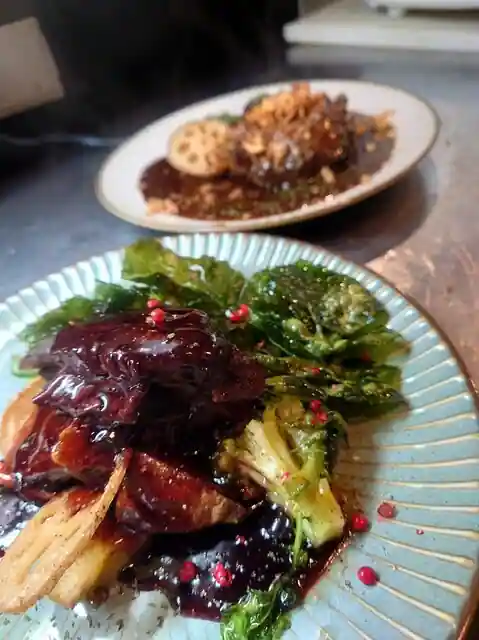
Bistro Cafe Tetsuya + Mia madre
豚にポン酒 とんとことん
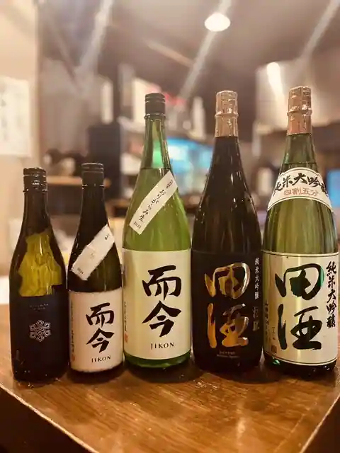
Buta Ni Pon Sake Tontokoton
やきとり能勢
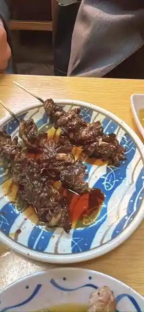
Yakitori Nose
近吉
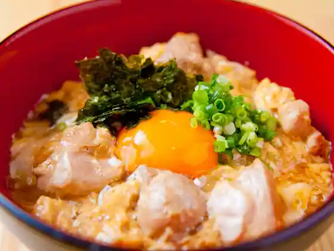
Kin Kichi
情熱うどん伊和正
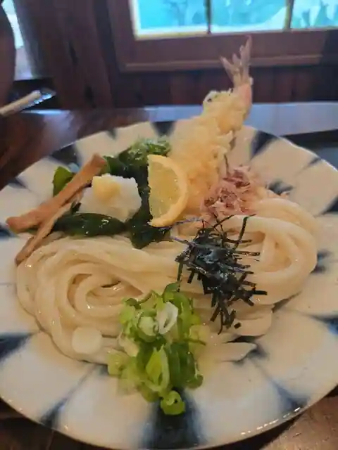
Jonetsu Udon Iwa Sei
ナッツベリー 川西本店
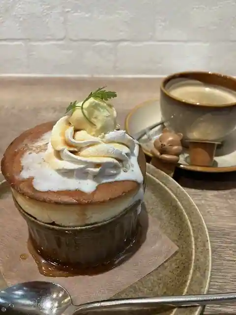
Nattsuberi Kawanishi Hon
イルグラーノ製麺所・イートインデノミーナ
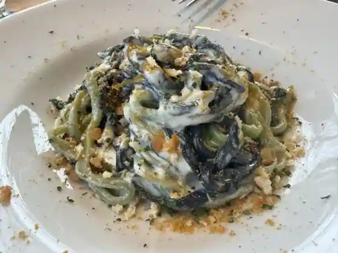
Irugurano Seimen Tokoro Itoindenomina
のせ屋
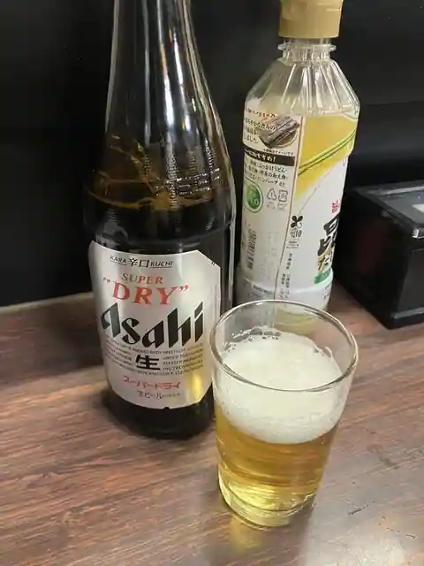
Nose Ya
ボッテガダイ
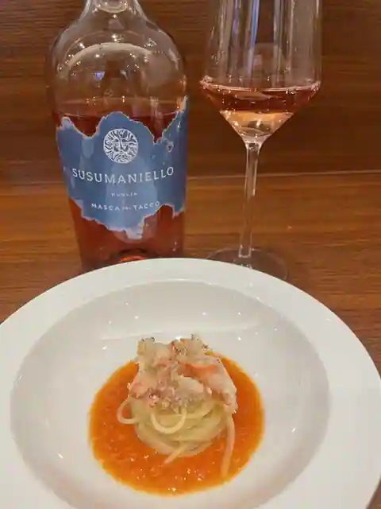
Bottegadai
てん川
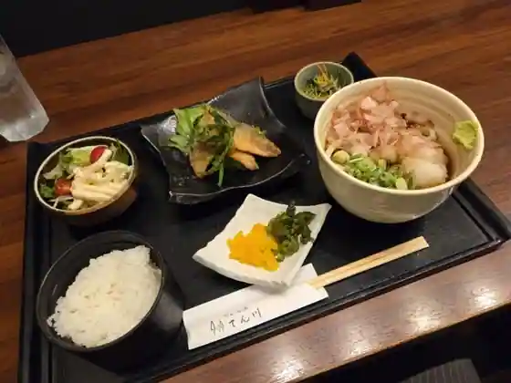
Kawa
絹延橋うどん研究所
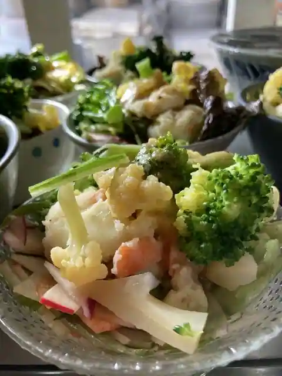
Kinu En Hashi Udon Kenkyusho
レストラン ルフラン 川西店
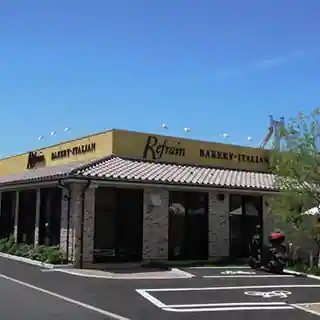
Restaurant Rufuran Kawanishi
インド料理インディゴ
Indo Ryori Indigo
隠れ庵
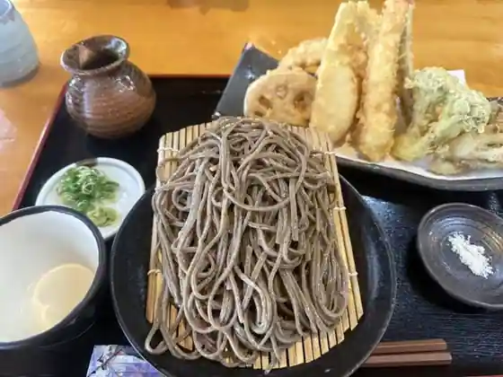
Kakure Iori
珉王 多田店
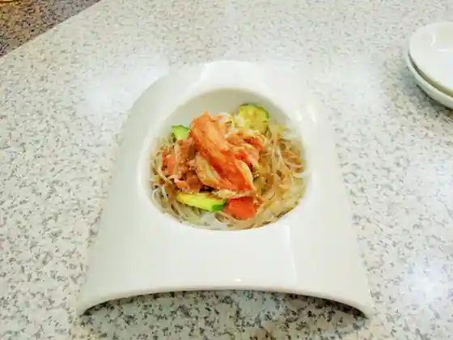
Tada
味噌之達人
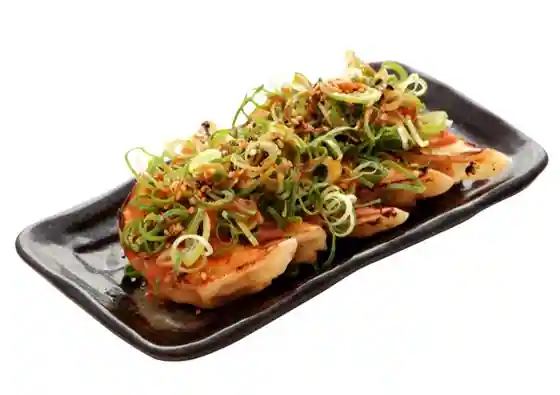
Miso Yuki Tatsujin
あんちすてーき とろろ麦めし 豚丸 ラソラ川西店
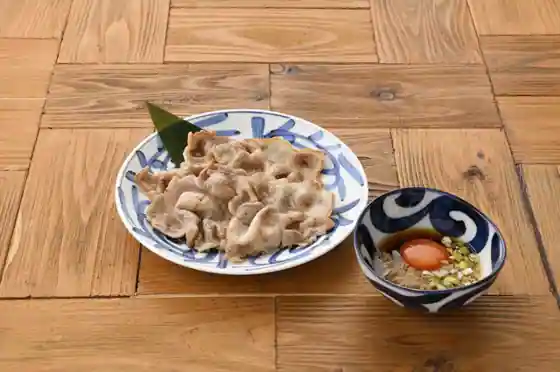
Anchisuteki Tororo Mugi Meshi Buta Maru Rasora Kawanishi
グリル ALTO
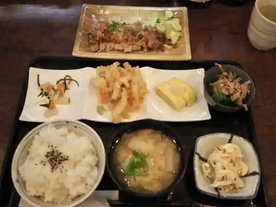
Grill ALTO
珈乃香 川西本店
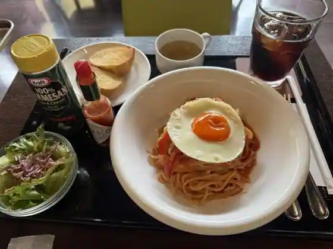
Ka No Kaori Kawanishi Hon
小花庵
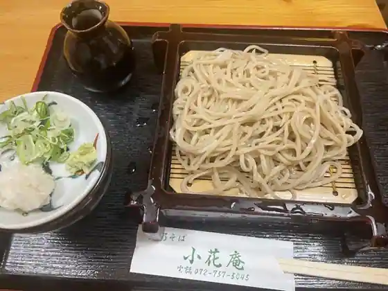
Kobana Iori
旬和食 六花
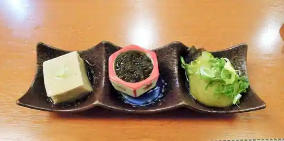
Jun Washoku Rikka
そば切り 而今
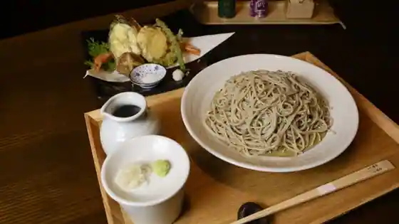
Soba Kiri Shikin
森のくまさん
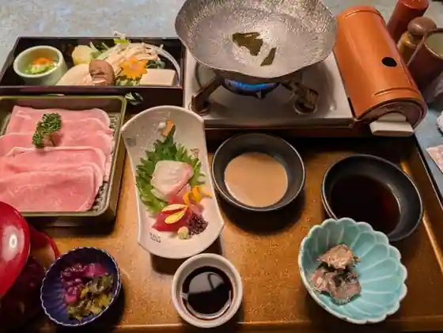
Mori Nokumasan